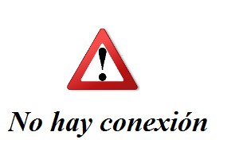

Rutas
Origen:
Your Location
Destino:
Universidad de Alicante
Universidad Miguél Hernández de Elche
Universidad de las Illes Balears
Universitat Politècnica de València.Campus Alcoy
Universitat Politècnica de València.Campus Valencia
Universidad Rey Juan Carlos
Universidad Jaume I de Castellón
Universidad de Málaga
Universidad Complutense de Madrid
Universidad San Pablo-CEU
Universidad Politécnica de Catalunya.Campus Manresa
Universidad Politécnica de Catalunya.Campus Barcelona
Universidad Politécnica de Catalunya.Campus Vilanova i la Geltrú
Universidad Politécnica de Catalunya.Campus Mataró
Universidad Autónoma de Madrid
Universidad de Zaragoza
Universidad Politécnica de Madrid
Mondragón Unibertsitatea
Universidad a Distancia de Madrid
Universidad Alfonso X El Sabio
Universidad Antonio de Nebrija
Universidad Autónoma de Barcelona
Universidad Camilo José Cela
Universidad Cardenal Herrera-CEU
Universidad Carlos III de Madrid
Universidad Católica San Antonio
Universidad de A Coruña
Universidad de Alcalá
Universidad de Almería
Universidad de Barcelona
Universidad de Burgos
Universidad de Cádiz
Universidad de Cantabria
Universidad de Castilla-La Mancha.Campus Ciudad Real
Universidad de Castilla-La Mancha.Campus Albacete
Universidad de Córdoba
Universidad de Extremadura.Campus Mérida
Universidad de Extremadura.Campus Cáceres
Universidad de Girona
Universidad de Granada
Universidad de Huelva
Universidad de Jaén
Universidad de La Laguna
Universidad de la Rioja
Universidad de Las Palmas de Gran Canaria
Universidad de León
Universidad de Lleida
Universidad de Murcia
Universidad de Oviedo.Campus Oviedo
Universidad de Oviedo.Campus de Gijón
Universidad de Salamanca.Campus Zamora
Universidad de Salamanca
Universidad de Santiago de Compostela
Universidad de Sevilla
Universidad de Valladolid
Universidad de Vic
Universidad de Vigo
Ruta en coche
Ruta en bici
Tráfico
Resultados
No hay conexión
